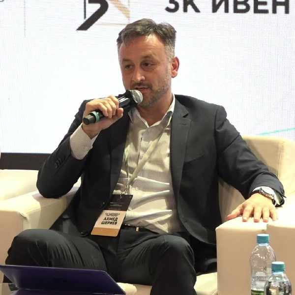

-
Профессиональная защита бизнеса от Коллегии адвокатов г.Москвы "Шериев и партнеры" позволит Вам защитить свою компанию от внезапных проверок и угроз.
-
Коллегия оказывает постоянную правовую поддержку юридическим лицам на условиях полного сопровождения и комплексной защиты.
-
Схема нашей работы открыта и понятна нашим доверителям. Стоимость услуг доступна и фиксирована.
-
Мы располагаем необходимой квалификацией и опытом для защиты Вашего бизнеса.
-
Для разрешения конкретной проблемы предоставляется адвокат, который имеет практический опыт в решении именно подобных вопросов.
-
Ежегодно мы защищаем более 300 субъектов малого бизнеса от рисков и проверок.

Наша Коллегия является одной из специализированных команд на российском рынке по комплексной защите бизнеса и частных клиентов в России и за рубежом, в том числе в сфере уголовного права.
Мы оказываем только квалифицированную юридическую помощь высокого стандарта, поскольку наши специалисты исключительно адвокаты с большим опытом.
Защита бизнеса - адвокаты
8 (925) 502-40-09
8 (925) 502-40-09
Наша команда по защите бизнеса - опыт свыше 20 лет


Комплексная защита бизнеса
8 (925) 502-40-09
8 (925) 502-40-09
Преимущества наших адвокатов
-
Адвокаты Коллегии имеют необходимый практический опыт в защите бизнеса свыше 15 лет.
-
Адвокаты имеют опыт решения различных задач для защиты бизнеса.
-
Наши адвокаты являются специалистами по экономическим и уголовным вопросам.
-
Адвокаты имеют сложившийся опыт и тактику общения с контролирующими органами.
-
Все поручения доверителей выполняются исключительно конфиденциально.
Осуществляем правовую защиту бизнеса по следующим направлениям
Прокуратуры. ⟶ Защита при блокировке счета
Банком по ФЗ 115. ⟶ Сопровождение налоговых
проверок. ⟶ Процедура взыскания
с должников. ⟶ Уголовно-правовая защита
бизнеса. ⟶ Защита от недобросовестной конкуренции. ⟶ Проверка контрагентов
и партнеров. ⟶ Сопровождение сделок. ⟶ Юридическая экспертиза и
разработка договоров. ⟶ Досудебное урегулирование
споров и конфликтов. ⟶ Представительство интересов в
судебных процессах. ⟶ Защита репутации
компании. ⟶ Защита авторских прав и
товарного знака. ⟶ Сопровождение банкротства. ⟶ Абонентское обслуживание
юридических лиц. ⟶
Узнать стоимость слуг адвокатов по защите бизнеса
Консультация адвоката
Правовое заключение по запросу
Правовой анализ документов компании на риски
Составление хозяйственных договоров организации
Сопровождение проверок бизнеса
Сопровождение компании в суде
Успешные кейсы наших адвокатов по защите бизнеса.
Организация обратилась в Коллегию за защитой от длительных проверок ОБЭП, блокирующих деятельность компании.
Адвокаты Коллегии разработали тактику поведения с правоохранителями, определил перечень предоставляемых контролирующим органам документов, принимали участие в опросах руководства и сотрудников компании, представлении документов директором компании.
После проведенных в течении 3 месяцев мероприятий, сотрудники ОБЭП потеряли интерес к проверяемой организации, без потерь для бизнеса.
В Коллегию обратилось юридическое лицо с вопросом о сопровождении процедуры банкротства и избежании субсидиарной ответственности директором компании.
Адвокат Коллегии разработал рекомендации для начала процедуры банкротства, создал условия для минования привлечения к субсидиарной ответственности генерального директора компании.
В результате правильно построенной позиции и сопровождения адвокатом, процедура банкротства и ликвидации ООО прошла без существенных потерь и рисков.
В Коллегию обратилось юридическое лицо с иностранным капиталом, нерезидент с вопросом о взыскании задолжености по поставкам продукции. Проблема со взысканием задолженности стояла уже около 3-лет, на грани истечения сроков исковой давности и организация должник не предпринимала никаких мер по покрытию долга.
Команда Адвокатов Коллегии предприняла решительные шаги для досудебного урегулирования возникшего спора. Врезультате правильно принятых мер реагирования и давления, досудебной перег-писки, организация должник признала за собой долг в полном объеме, подписала акт сверки между юр. лицами и произвела погашение всей задолженности согласно принятому между сторонами соглашению о погашении задолженности в три этапа.
В результате, Доверитель не понес судебных расходов и не был вовлечен в длительную и дорогостоящую судебную процедуру.
Публикации в СМИ по теме защиты бизнеса
Защита бизнеса от проверок УЭБиПК (ОБЭП)...
Ответственность единоличного исполнительного органа компании...
Советы финансовому директору...
Риски привлечения Гендиректора к уголовной ответственности...